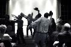
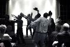

SpearheadNews.com
Super News
2003-2004

Auditions
Events
Rehearsal Schedules
Interviews
Photos
Reviews
More Fun Stuff!
The
Super Handbook
Tips, Tricks, and FAQs
San
Francisco Opera
Links
Classifieds
Contacts
Archives
Members Only
Spearheadnews.com is not officially affiliated with any
performing arts organization.
All photographs remain the property of their copyright holders.
©2003 SpearheadNews
All Rights Reserved
The
Fractured Fedora a Super
Smash Hit
by
Pearl Fischer
Just
as in Das Rheingold, the Prologue to this year’s
Super skit introduced us to the themes and motifs that were carried through
the following three acts; in this case, however, the themes and motifs
hit a little closer to home and were infinitely funnier to the captive
audience. It began with two backstage personnel (Jenny Jirousek
and Andrew Korniej) bickering over the status of an umbrella,
asking that profound question, “Is it a prop or is it a costume?”
The familiar operatic in-fighting was disrupted by Katherine Brazaitis,
note-perfect with her headset-wearing, harried Stage Manager.
From there we were taken to a kindergarten where bratty children--Susan
Anderson (adorable in pigtails), Marcel Delgado
and Grove Wiley--demanded to hear scary stories of the
opera.  And
what could be scarier than the fate of SFO Super Captains? When asked
to define a Super the kids’ responses got roars of approval: (Supers)
stand on stage a long time, (Supers) get replaced by stagehands and ballet
dancers, (Supers) take pictures of principals, etc. etc. All three managed
to let their Inner Child run rampant and almost caused a riot with their
screams of horror whenever a certain Southern California city was mentioned!
And
what could be scarier than the fate of SFO Super Captains? When asked
to define a Super the kids’ responses got roars of approval: (Supers)
stand on stage a long time, (Supers) get replaced by stagehands and ballet
dancers, (Supers) take pictures of principals, etc. etc. All three managed
to let their Inner Child run rampant and almost caused a riot with their
screams of horror whenever a certain Southern California city was mentioned!
Act One was brought to an abrupt halt by the first fire alarm of the evening;
we were then led on to the executive offices of SFO where Mike
Harvey and Mimi Timberlake  began auditions for a new Super Captain. Priscilla Lore
looked like Eve Arden and sounded like Judy Holliday as a timid secretary
bringing on a cast of backstage personnel interviewing for the-less-than-desirable
position.
began auditions for a new Super Captain. Priscilla Lore
looked like Eve Arden and sounded like Judy Holliday as a timid secretary
bringing on a cast of backstage personnel interviewing for the-less-than-desirable
position.
First up was the disinterested stage manager (Katherine)
who exited cuing the Lighting Director. There was a roar of recognition
as  Paul
Newman led on a blinded, olfactory-sensitive Michael
Strickland in a brilliant pastiche of the somber entrance of
Don Carlos’ Grand Inquisitor. Next up was an inspired Prompter
in a Box (Bruce McNaughton) quietly cueing the executives
and himself.
Paul
Newman led on a blinded, olfactory-sensitive Michael
Strickland in a brilliant pastiche of the somber entrance of
Don Carlos’ Grand Inquisitor. Next up was an inspired Prompter
in a Box (Bruce McNaughton) quietly cueing the executives
and himself. A ditsy, umbrella-hurling Props Manager (Jenny) preceded
an arch Wardrobe Person (Andrew playing Jenny Green)
who walked offstage taking a well-timed cell phone call from Placido Domingo.
A ditsy, umbrella-hurling Props Manager (Jenny) preceded
an arch Wardrobe Person (Andrew playing Jenny Green)
who walked offstage taking a well-timed cell phone call from Placido Domingo.
The
final, unsuspecting interviewee was Lisa Lorea, brilliantly
revealing herself in a Doris Day moment, with “My name is Carrie,
Carrie Murphy,”  as
she slipped off her eyeglasses and virtually undid her bun and let her
hair fall down around her shoulders. Lisa did a charming and rather accurate
impersonation of Carrie, who seemed to be laughing louder than anyone
else in the audience.
as
she slipped off her eyeglasses and virtually undid her bun and let her
hair fall down around her shoulders. Lisa did a charming and rather accurate
impersonation of Carrie, who seemed to be laughing louder than anyone
else in the audience.
Another fire alarm cut Act Two "short" but we were soon attending
one of those Opera Company morale-boosting parties to introduce the new
Super Captain. Katherine Brazaitis  did
an excellent Pamela R. with sloooow, deliberate diction, interspersed
with Teutonisms like “Oper-Schmutz”, which already seems to
have entered the Super lexicon. "Pamela" was followed onstage
by Darcy Fink, as a development department person, panhandling
spare change for the Opera. For those who attended any of last year’s
Opening Night parties, Katherine’s string of words beginning with
“super” (but never ending in “numerary”) would
strike a chord, as would her readiness to be distracted by the demands
of her dramaturg.
did
an excellent Pamela R. with sloooow, deliberate diction, interspersed
with Teutonisms like “Oper-Schmutz”, which already seems to
have entered the Super lexicon. "Pamela" was followed onstage
by Darcy Fink, as a development department person, panhandling
spare change for the Opera. For those who attended any of last year’s
Opening Night parties, Katherine’s string of words beginning with
“super” (but never ending in “numerary”) would
strike a chord, as would her readiness to be distracted by the demands
of her dramaturg.
The climactic scene of Fedora transported us into new Super Captain
Carrie’s worst nightmare; The Night of the Living Dead Supers.  Carrie
cheerfully took up her new duties only to become faced with the frightening
reality of dealing with demanding Supers as eight zombies,
Carrie
cheerfully took up her new duties only to become faced with the frightening
reality of dealing with demanding Supers as eight zombies,  all
carrying umbrellas, sleep-walked through the audience to a chorus of “Carrie…
Carrie” and surrounded her onstage. Screaming “STOP!”
Lisa burst through the zombies, and for the riotous finale
had four new Production Super Captains (Nancy, Charlie,
Larry and Bruce) lead the whining mass
back through the audience
like the Gods on their entry into Valhalla!
all
carrying umbrellas, sleep-walked through the audience to a chorus of “Carrie…
Carrie” and surrounded her onstage. Screaming “STOP!”
Lisa burst through the zombies, and for the riotous finale
had four new Production Super Captains (Nancy, Charlie,
Larry and Bruce) lead the whining mass
back through the audience
like the Gods on their entry into Valhalla!
The skit was consistently hilarious with its up-to-the-minute seasonal
references such as the Don Carlos fire alarms, “changing”
production values and, of course, the ubiquitous Fedoras. The cast was
both well-rehearsed and improvisational and the range of characters cleverly
drawn.
After group bows author, director and narrator Charlie Lichtman
was deservedly called back onstage by Stephanie Salter
to take a solo one and received the first standing ovation of the evening.